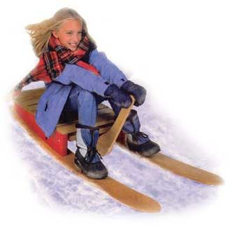
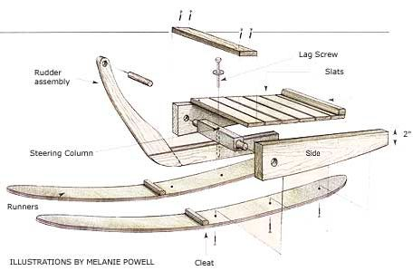
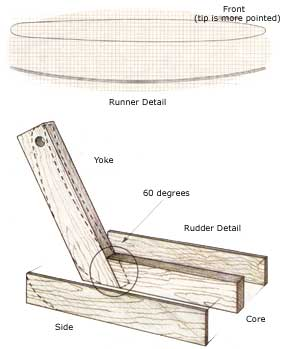
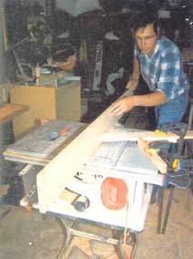
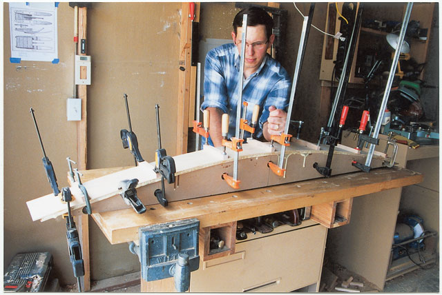
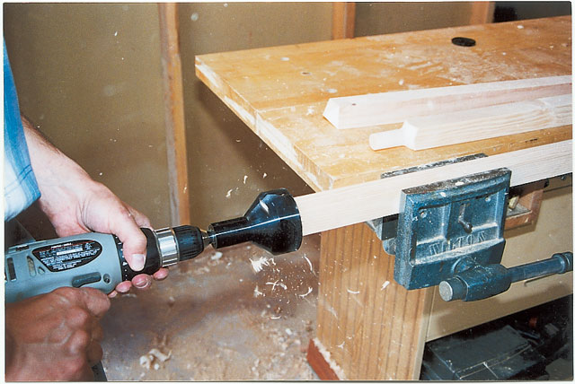

This nifty wooden ski sled combines the speed and agility of a steel-runner sled with the comfort and deep-snow running ability of a toboggan, making it a good choice for gentle golf courses or moderate slopes. And, unlike most sleds, this model comes with a unique rudder that allows you to steer and brake. What's more, this sled is big enough to seat two kids comfortably or a parent-child team. The wooden sled would make a truly fine holiday gift for your favorite child. With the exception of the skis, this is a relatively easy screw-and-glue project. The sled can be built in about two weekends, and half that is making the forms needed to create the curved skis. Once they are finished, you can easily knock out the sled in a weekend.
The sled is based on a design I found in The Boy Mechanic a wonderful set of books published in 1913. The original design called for barrel stave runners. Since old wooden barrels are as rare as hen's teeth these days, I had to make a few modifications.
To make the curved ski runners, you'll use a process called "bent lamination," which involves gluing together several thin strips of wood to form a curved board. The process uses a lot of clamps and glue, but it's much easier (and safer) than steam-bending, the technique that's traditionally used to make toboggans. I used ash, a hardwood that has excellent bending properties, but you could use red or white oak. Don't be afraid to change these dimensions as needed. I'm sure the original boy mechanics didn't hesitate to use available stock.
You can download free sled plans and detailed drawings of the runners and rudder.
| Item | Size | Quantity |
| Form | ¾-inch MDF, 4 feet by 8 feet | 1 |
| Runner | ¾ inch by 5¼ inches (5½ inches *) by 60 inches (64 inches*) | 2 |
| Side | 1¾ inches by 5½ inches by 26 inch | 2 |
| Slat | ¾ inch by 3½ inches by 18 inches | 7 |
| Backstop | 1½ inches by 1½ inches by 18 inches | 1 |
| Steering Column | 1½ inches by 1½ inches by 18 inches (20 inches) | 1 |
| Handle | 1-inch by 6-inch dowel | 1 |
| Yoke | ¾ inch by 4½ inches by 22 inches | 1 |
| Rudder Side | ¼ inch by 3½ inches by 24 inches | 2 |
| Rudder Core | ¾ inch by 3½ inches by 20 inches | 1 |
| *Rough-cut pieces to length in parentheses, then trim to final dimensions before assembly. | ||
| Deck Screws | 1½ inches | 43 |
| Brass Wood Screws | No. 8, 1-inch | 8 |
| Lag Screw | 3/8 inch by 3½ inches | 1 |
| Steel Washer | 3/8 inch by 1¼ inches | 1 |
| Aluminum Bar Stock | ¼ inch by ¾ inch by 19 inches | 1 |
Making the curved runners begins with creating a 5¼-inch-thick bending form. To build the form, I used three-quarter-inch medium density fiberboard (MDF). Made from wood dust, MDF is dense, easily machinable and inexpensive (a 4-foot-by-8-foot sheet costs less than $20). The downside to this product is that it's heavy and dusty. To avoid these problems, have the sheet ripped into 6-inch-wide strips at the store. Even at a dollar a cut, it's a bargain: You'll not only save the hours you would have spent vacuuming dust from every corner of your shop, you'll also save your back.
Next, establish the runner's curve. Drawing a fair curve isn't difficult if you have a guide. To make one for yourself, take a 60-inch-long thin strip of wood, mark the center of the strip, then string the ends together and bend the strip to make a bow. Adjust the string so there's a 6-inch gap between the center of the wood strip and the string.
Using the bow, draw the curve on the first piece of MDF, then cut the curve using a jigsaw or band saw. This piece is a template for all the others, so file or sand out any major bumps or divots (the strips of wood will bridge over any minor bumps, but the smoother the better).
Making the next six pieces of the form isn't as tedious as the first, provided you use a router and a flush-trim bit. First, use the MDF template to draw the curve on the remaining pieces. Next, cut these pieces roughly to shape, but don't worry about cutting exactly to the line. Once the pieces are cut, screw and glue a rough cut strip to the template and clamp them to your work table. Instead of sanding, I used a flush trim bit. A roller bearing rides against the smooth edge as the cutter trims the rough piece exactly to size.
Continue stacking and cutting the strips in the same way, with one exception: Screw, don't glue, the last strip in place. You'll use this strip later to create the bottom curve to the sides of the sled.
Finally, drill clamp holes into each side of the form. Starting from the center of the form, space the holes evenly on each side to provide uniform pressure to the entire curve. You can use whatever kinds and sizes of clamps you have on hand by adjusting the locations of the holes.
Normally, three-quarter-inch-thick wood doesn't want to bend, but by cutting (or "resawing") the board into three strips of even thickness, it's easy to make it curve the way you want. Resawing is usually done on a band saw, but you can successfully use a benchtop table saw. To do this you'll need a thin-kerf ripping blade, such as the Freud TK-206. The thin blade prevents the saw from stalling and maximizes the amount of wood left after the cut.
It's important to keep the wood tight against the fence. If the wood were to tilt or shift in the middle of the cut, it could ruin the strip or even cause the board to kick back. To prevent this, use a featherboard to hold the wood tightly against the fence and prevent it from creeping back on the blade.
Another tip when making the strips is to take a light cut. Even with the right blade, it doesn't take much to stall a small saw. To prevent this, make each cut in six 1-inch-deep passes. Finally, I made the last cut just less than the midpoint of the board and used a handsaw to separate the strips. Once you've cut the strips, sand or plane away any major saw marks.
To glue the strips together, I used a polyurethane glue. The advantages to this adhesive is that it's waterproof, it has a long working time and, because it foams as it cures, it's good for filling small gaps. The only major difference between this adhesive and other glues is polyurethane needs moisture to cure properly. When working with dry wood, use a spray bottle to dampen the wood before applying the glue.
To clamp the three glued wood strips to the form, start at the center of the form and work out toward the ends. You can use a wood block to tap the strips if they start to slip out of alignment, but remember that you'll trim the sides and ends after it has dried.
When you remove the runner from the form, don't be surprised if it's caked with a thick crust of dried glue. All it needs is a little cleaning and shaping. First, scrape or plane off the glue from one edge of the runner. Next, run the clean edge against your table saw's fence and trim the opposite edge. Finally, flip the runner and trim the scraped edge to final width.
When both runners are cut to width, position them side by side on your workbench and compare their curves. If one runner springs back a little more than the other, the two may not be perfectly symmetrical. To minimize this, mark the "pivot point" of each runner, measure out 30 inches to each end, then cut the runners to length. Lastly, shape the front and back ends of the runners as shown in the runner detail illustration.
The rudder is the most interesting part of this sled. The steering column and yoke work together so the rudder not only turns from side to side (to steer), but also moves up and down (to brake).
Make the steering column first. To do this, cut a 1½-by½-inch piece, 20 inches long. At this point, you could turn the ends on a lathe, but a simpler option is to use a tenon cutter attached to your drill.
The tenon cutter works just like a giant pencil sharpener, and the only trick in using this tool is making sure the tenon is centered on the piece. To help guide the cutter, I used my chop saw to make a four-sided point at each end before I cut the tenons. Because the cutter makes a 2¾-inch-long tenon, you'll need to trim 1 inch off each end.
Make the rest of the rudder assembly as shown in the Image Gallery. Resaw the quarter-inch thick rudder sides from a piece of three-quarter-inch thick stock. Cut the yoke to shape before gluing the rudder sides. Finally, attach an optional aluminum wear bar to the bottom of the rudder if the sled will get heavy use.
To shape the bottom edge of the sides, simply unscrew the last strip of the MDF runner form and use it as a template to lay out the curve. Next, cut to the line using a jigsaw or bandsaw. At this point you can use a belt sander to shape the side, or if you have a flush trim bit, you can clamp the form strip to the side piece and rout it to shape. Use the first side as the template for the second.
Barring any sled-meets-tree incidents, this sled will survive several generations of snow speedsters. As with all high-speed recreation activities, I strongly recommend riders always wear safety helmets. To keep the sled looking its best, invest a little extra time in the finishing. Disassemble the sled and coat all surfaces with a polyurethane. For extra color, I painted the sides with a spray enamel. Finally, wax the runners once or twice a season if you want extra speed.
|
 PHOTO: NATHAN HAM PHOTOGRAPHY The steering rudder on this wooden sled also acts as a brake. |
 ILLUSTRATION: MELANIE POWELL Wooden sled assembly diagram. |
 ILLUSTRATION: MELANIE POWELL Ski template and rudder assembly. |
|
 PHOTO: JOE HURST-WAJSZCZUK To avoid stalling the saw, resaw the board in 1-inch increments. Position a featherboard in front of the blade to hold the wood against the fence. |
 PHOTO: JOE HURST-WAJSZCZUK Start clamping the runners from the center and work out. Wooden blocks distribute clamping pressure and protect the runner. |
 PHOTO: JOE HURST-WAJSZCZUK Use a tenon cutter to make the round ends of the steering column. |